World of ClaudeCraft · The Farshore · Working survey
The things that come through the breaks
What the first mob looks like now, what parts the kit already ships, and one
proposal for what to do about it.
This is not the concept book. It is the survey that comes before one:
every image below is a real render of a file already in this repo, shot on the concept
book's own lighting rig, so a decision made here holds up against the plates already
published. Nothing here has been modelled yet. The point is to look at the actual
material and pick a direction.
The Riftspawn is the common trash of the campaign: the twelve you kill in the opening
quest while the militia watches. It is the first enemy the player ever fights on the
island, so it is the first thing that has to say what a rift is. Here it is from
four angles, straight out of public/models/chars/npcs/riftspawn.glb.
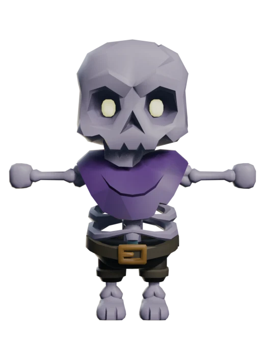
Frontyaw 0Giant chibi skull, cream eyes, purple mantle, brown belt, gold buckle, work
shorts.
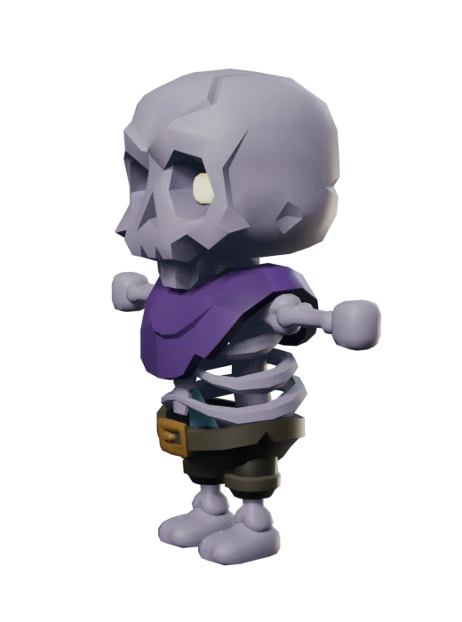
Three quarteryaw 55The ribcage is visible between mantle and belt, and it is the most interesting
thing on the model.
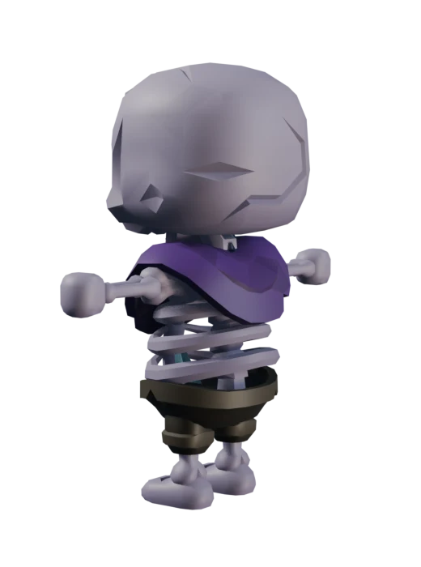
Rear three quarteryaw 130The five star-glass shards the book promises are somewhere in here. They do not
read.
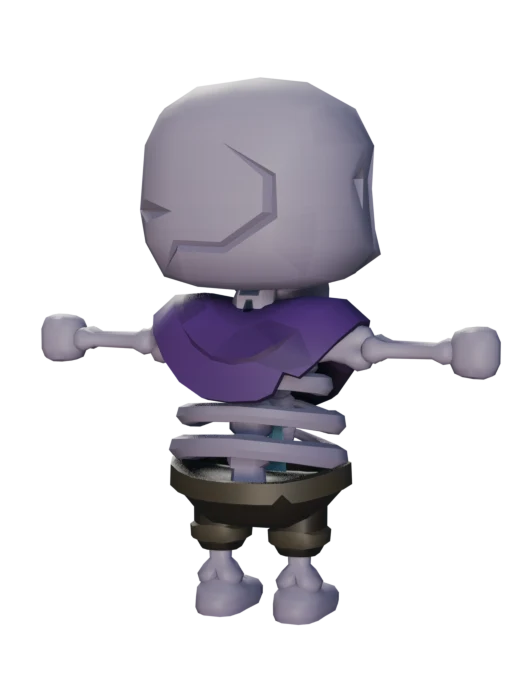
Rearyaw 200From behind it is a skeleton in a cape. Nothing identifies it as
break-spawned.
The verdict already on record
The most generic of the three, a classic dungeon skeleton in a purple mantle with a
brown belt, gold buckle and work shorts. The wardrobe actively fights the lore: a belt
someone buckled says "dressed corpse", undeath plus civilisation, the two things the
brief excludes.
The lore this is supposed to serve is not undeath. It is unfinished rooms from a
sleeping world pressing into the waking one. A skeleton is a dead body. What the
brief asks for is an unfinished one. Those are different shapes.
Two other faults worth naming, because any fix has to close them:
The star-glass, the one mark every break-spawned thing in the book is supposed to
share, fails on all five mobs. Here the shards sit inside the ribcage, so the
body occludes them from every angle. A pale blue spike with strong emission also just
reads as ice, not glass.
The eye glow is cream here and ice blue on its two siblings. One family should burn
one colour.
The idea
The Riftspawn is a doorway trying to be a person
Cut an arched opening clean through its chest. Give the opening real jamb thickness, so
it is a piece of architecture and not a decal. Put cold pale light and a single flat
unpainted colour inside it. Then take the tailoring off and let a drape hang where the
shorts were.
Three reasons this is the move, in order of how much they matter:
A hole in the silhouette is the only kind of wrong that survives distance.
Detail vanishes at gameplay range; an outline you can see through does not. Nothing
else in the bestiary has one, so it also makes the Riftspawn instantly
identifiable.
Architecture is already native to this art style. The review notes call
architectural fragments the highest-leverage device available and worry about where to
get them. They are already here: 381 KayKit dungeon pieces under
public/models/dungeon/, same painted low-poly look as the cast, already
optimized, already credited. A chunky stone arch cannot look like it came from a
different game, because it came from the same pack.
The body already has the hole. Look at the three-quarter plate again: this
skeleton's torso is an open ribcage. We are not adding an aperture, we are uncovering
the one that is there and rebuilding it as masonry. That is why the surgery is small
rather than a rebuild.
On method
The parts below are references and donors, not stickers. Anything added gets derived
from the host's own faces and welded flush, which is the rule the repo already
records: edit the mesh, never generate a shape and fit it over the model. The reason the
previous attempts failed (a mill roof hovering over a spider, shards standing off a
back) is that they were parked next to the body instead of cut into it.
The parts bin
Real KayKit dungeon pieces, already in the repo
Every one of these is a file the game already ships. Triangle counts are measured, and
they are tiny: the whole Riftspawn body is about 5,300 triangles, so a 600 triangle arch
is affordable even before it gets trimmed to the part we actually want.
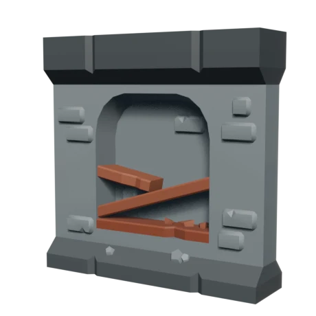
Strongestwall_inset_shelves_broken751 trisAn arched recess with snapped timber beams stabbing across it.This is the whole idea in one existing file: the arch AND the
broken rafters through it. The chest aperture, more or less as is.
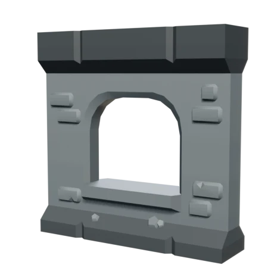
Strongestwall_archedwindow_open635 trisA clean arched opening with a proper stone sill and real jamb depth.The cleaner, more formal version of the same aperture. Reads as
deliberate architecture rather than damage.
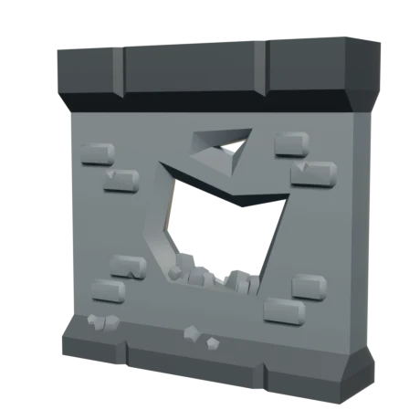
Strongestwall_broken784 trisA torn hole with jagged masonry teeth around the rim.The violent version: a chest that was punched through rather than
built with an opening. Teeth give the star-glass somewhere to grow from.
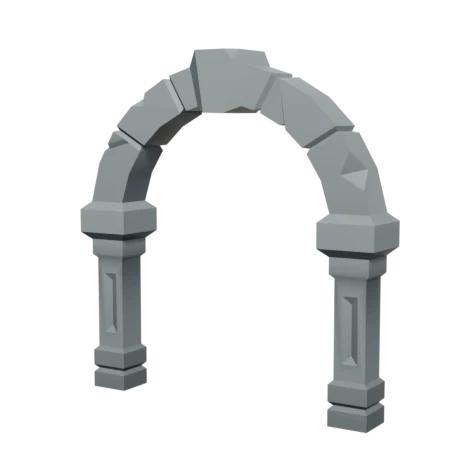
Goodarch436 trisA freestanding voussoir arch on two short columns.Shoulder yoke, or a ribcage replacement: the arch springs from the
hips and the shoulders sit on its crown.
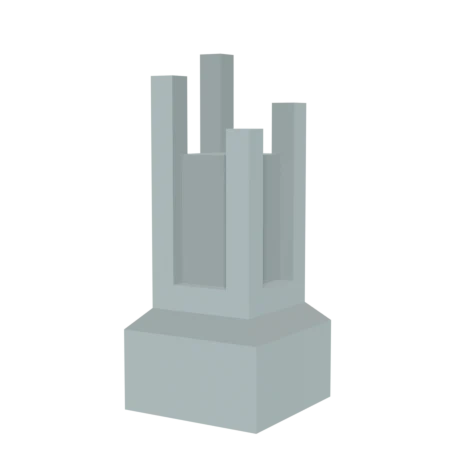
Goodcolumn_broken108 trisFive snapped shafts on a base, each ending in a clean flat break.The "unfinished" language, exactly. An arm that ends in this instead
of a hand is the strongest single wrongness in the bin.
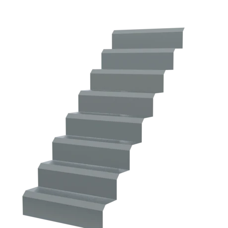
Goodstairs_modular_center54 trisEight clean steps, and almost free.A stair-step spine ridge down the back, which would finally give
the rear view an identity.
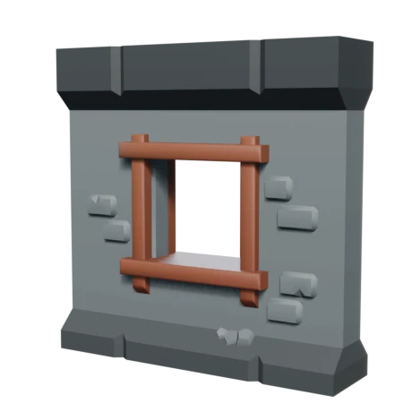
Maybewall_window_open604 trisA square timber-framed window opening.Warmer and more domestic than the arch. Reads cottage rather than
dungeon, which may be too cosy for a rift.
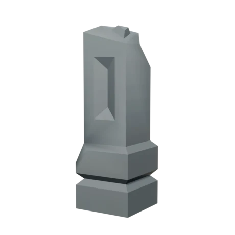
Maybefence_pillar_broken102 trisA snapped stone post with a chamfered break and a carved slot.Limb stock. The carved slot could serve as a single eye
socket.
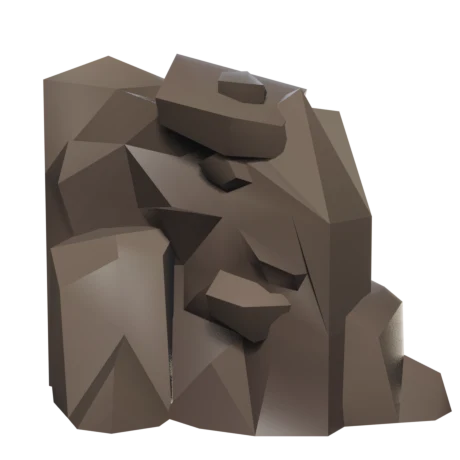
Mayberubble_half390 trisA faceted heap of broken stone, warm brown.Material to graft into a shoulder or hip so the figure looks
part-collapsed. Wrong colour as shipped; repaintable.
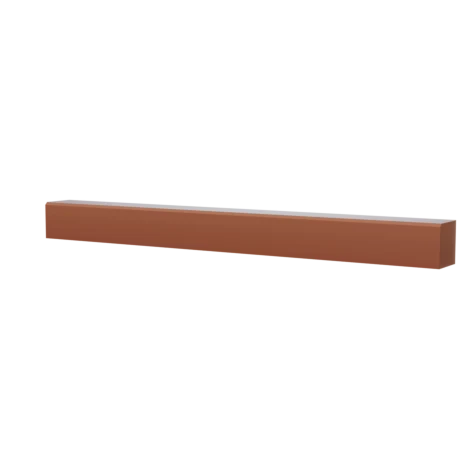
Maybescaffold_beam_wall16 trisOne plain timber beam. Sixteen triangles.Rafter stock for anything that needs a snapped beam driven through
it, at essentially no cost.
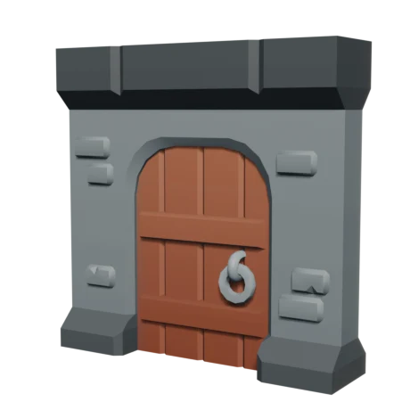
Rejectwall_doorway1,068 trisArched doorway with a hung timber door and an iron ring.The door and its ironwork say carpenter and locksmith. Craft and
culture are exactly what the brief excludes. The arch under it is usable, the
door is not.
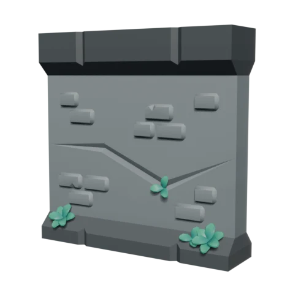
Rejectwall_cracked2,010 trisAn intact wall with a hairline crack and some plants.Surface detail only, no opening, and it costs more than everything
else here. Nothing to take.
The bodies
Which host we operate on, and one finding that settles it
I lined up every plausible host in the kit to check whether a different body would come
pre-solved. It does not, and the reason is worth knowing before we start cutting.
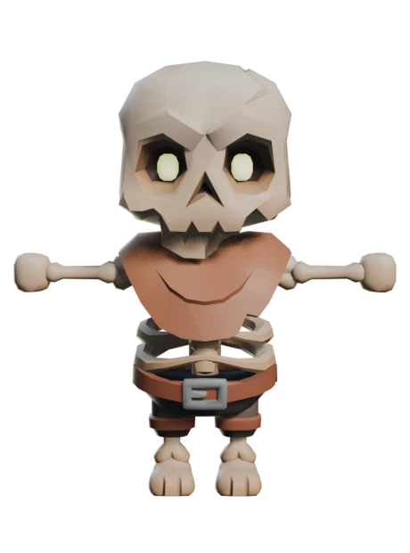
Recommended hostskeleton_minion5,288 tris · 31 clipsToday's base. Belt, buckle and shorts to cut, and a skull to rework.Wins because its torso is already an open ribcage, and because it
already exports, already has the palette map written, and already carries the
full clip set.
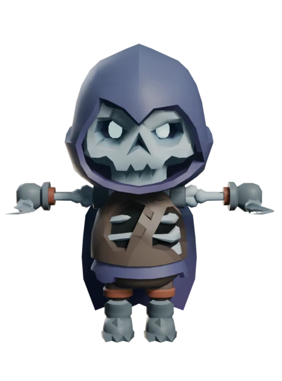
skeleton_rogue6,638 tris · 25 clipsHooded, and the hood does read here.Spoken for: this is the Breach Wretch's body. Keeping the two
siblings on different bodies is what stops a pack reading as five copies of one
threat.
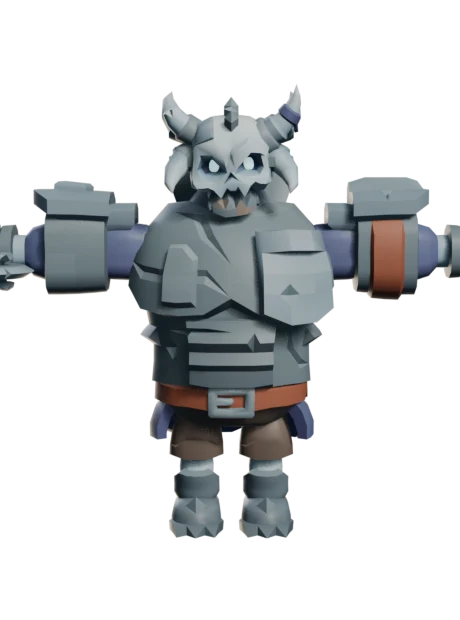
skeleton_golem7,156 tris · 8 clipsHorned skull, real bulk, fitted plate.Spoken for by the Sundered Horror, and correctly: it is the only
body in the kit with the weight for a world elite. Too big for trash.
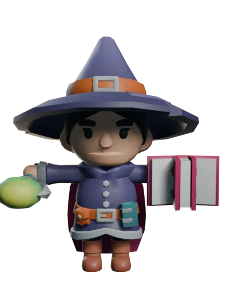
mage_classic5,683 tris · 28 clipsRobed, which sounded promising. Also belted, buckled, and hatted.No advantage. Adds a human face to remove and needs a new palette
map written.
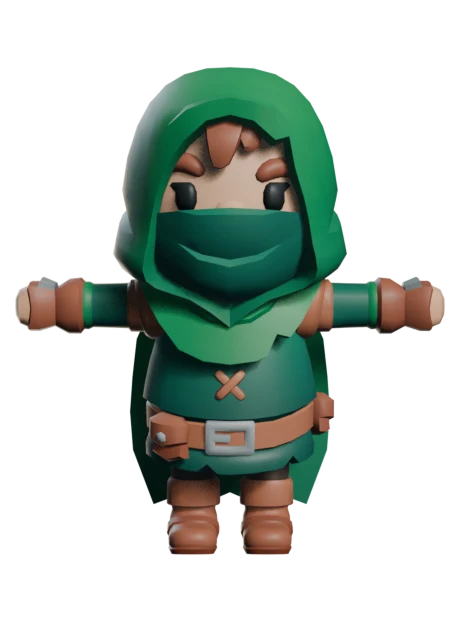
rogue_hooded7,185 tris · 22 clipsHood, mask, belt, buckle, boots.The most tailored body in the lineup. Worst starting point for a
thing that should wear drapes or nothing.
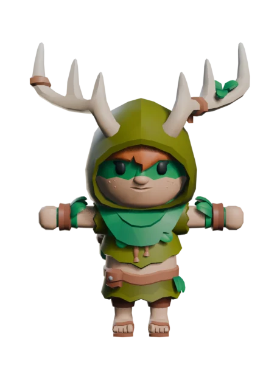
druid7,784 tris · 22 clipsAntlers, hood, cinched robe, belt.The antlers are the only interesting part and they belong to a
different creature. Not this one.
The finding
Every single body in the kit wears a belt with a buckle. Minion, rogue, golem, mage,
hooded rogue, druid: all belted. So "start from a robed body to avoid the tailoring
problem" is not an option that exists. The tailoring has to be cut off whichever host we
pick, which removes the only argument for changing hosts. Stay on
skeleton_minion, and treat cutting the belt as step one rather than as a
reason to switch.
Four directions
All four are buildable by surgery on the same host. They are not compatible; pick one
A. Doorway torso
My recommendation
An arched opening cut clean through the chest where the ribcage is now, with real jamb
depth and a flat unpainted interior lit cold pale blue. The skull becomes a featureless
oval with one clean seam where a face should start, and the glow lives in the seam. The
belt, buckle and shorts come off; a drape grown from the torso's own faces falls where
the shorts were. Star-glass through one shoulder, dark violet glass with a pale rim
only, pushed through a raised discoloured entry so glass and body share an edge.
Donors
wall_inset_shelves_broken or
wall_archedwindow_open for the arch profile, scaffold_beam_wall
for a snapped rafter through the opening
Reads at range
Yes, and better than anything else here: it is a hole in the
outline
Rig cost
None. No new bones, all 31 clips carry through untouched
Risk
An opening through a chibi torso this short may leave too little
material above and below it. This is the thing to test first, in Blender, before
anything else gets built
B. Unfinished person
The cheapest, and the safest
Asymmetry carries it instead of an aperture. One arm and shoulder finished; the other
still raw frame, ending in a clean flat cut that shows a single unpainted colour, the
way column_broken ends. Featureless head, same drape, same star-glass
treatment. The dream simply stopped rendering half of it.
Donors
column_broken for the break language,
rubble_half grafted into the unfinished shoulder
Reads at range
Yes. A missing hand changes the outline
Rig cost
None
Risk
Lowest risk of the four, and the least memorable. Reads as damaged
before it reads as unfinished, and "damaged skeleton" is close to where we already
are
C. Room-corner demon
The most demonic, and the most expensive
The torso is literally the corner of an unfinished room: two wall planes meeting at an
edge, a small arched window in the chest with pale light behind it, roof-lath spurs off
the shoulders, small horns. Furthest from a skeleton, closest to the "more demonic"
note in the brief.
Donors
wall_archedwindow_open,
scaffold_beam_wall for the lath spurs
Reads at range
Yes, strongly
Rig cost
None, but the clips suffer: a hard-cornered box torso fights the
torso twist in the walk and attack cycles, and a flat plane creasing through itself
is very visible
Risk
Highest. It also drifts toward "small building with legs", which is a
different creature from "the trash you kill twelve of"
D. Wrong-count sleeper
Strong idea, wrong figure
Four arms, the extra pair folded across the chest, a violet sheet-shroud, eyes closed
with the glow coming from under the lids, star-glass out of the back. Wrong number of
limbs is silhouette-level wrongness and it is genuinely dreamlike.
Donors
None needed; this is body surgery only
Reads at range
Yes
Rig cost
Real. Two new bones, and the extra pair has to be posed
per clip or it hangs dead through all 31 of them
Risk
The cost lands on the most numerous mob in the campaign, which is the
worst place to spend it. Worth holding for a single named elite instead
What I need from you
Three answers, then I start cutting
1. Which direction, A to D?
A is my recommendation and B is the safe fallback. If you want, I can build A's
aperture as a five minute test in Blender first and render it, so you are choosing
against a picture instead of a paragraph.
2. How far does the skull go?
A featureless head is the single biggest step away from "Halloween skeleton", and it
is also the biggest departure from what is on screen today. Options: keep the skull and
only fix the eye colour, blank it into a featureless oval with one seam, or something
between the two (fill the sockets, keep the jaw).
3. Is the published book the destination, or a second page?
The existing concept book already lists the Riftspawn in its running order, so the
mobs can simply join it as each one passes review. The alternative is a separate mobs
book on its own branch, which keeps this work clear of the Ewald and Marsh follow-ups
still open. I lean toward one book, since the builder is already set up for it.
One thing I decided without asking
The review notes prescribe generating replacement creatures through the Tripo pipeline,
on the grounds that bolt-on props failed and glass and flesh have to be one mesh. The
premise is right and the conclusion does not follow: mesh surgery also makes them one
mesh, and it never leaves the art style, because it never leaves the kit. The parts bin
above is the argument. If you want Tripo kept as a fallback for the wolf and the spider,
which are harder cases, say so and I will treat those two separately.